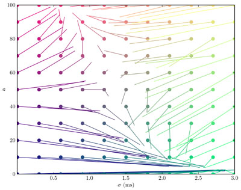

Introduction¶
Brian is a clock driven simulator for spiking neural networks, written in the Python programming language.
The simulator is written almost entirely in Python. The idea is that it can be used at various levels of abstraction without the steep learning curve of software like Neuron, where you have to learn their own programming language to extend their models. As a language, Python is well suited to this task because it is easy to learn, well known and supported, and allows a great deal of flexibility in usage and in designing interfaces and abstraction mechanisms. As an interpreted language, and therefore slower than say C++, Python is not the obvious choice for writing a computationally demanding scientific application. However, the SciPy module for Python provides very efficient linear algebra routines, which means that vectorised code can be very fast.
Here’s what the Python web site has to say about themselves:
Python is an easy to learn, powerful programming language. It has efficient high-level data structures and a simple but effective approach to object-oriented programming. Python’s elegant syntax and dynamic typing, together with its interpreted nature, make it an ideal language for scripting and rapid application development in many areas on most platforms.
The Python interpreter and the extensive standard library are freely available in source or binary form for all major platforms from the Python Web site, http://www.python.org/, and may be freely distributed. The same site also contains distributions of and pointers to many free third party Python modules, programs and tools, and additional documentation.
As an example of the ease of use and clarity of programs written in Brian, the following script defines and runs a randomly connected network of 4000 integrate and fire neurons with exponential currents:
from brian import *
eqs='''
dv/dt = (ge+gi-(v+49*mV))/(20*ms) : volt
dge/dt = -ge/(5*ms) : volt
dgi/dt = -gi/(10*ms) : volt
'''
P=NeuronGroup(4000,model=eqs,threshold=-50*mV,reset=-60*mV)
P.v=-60*mV
Pe=P.subgroup(3200)
Pi=P.subgroup(800)
Ce=Connection(Pe,P,'ge')
Ci=Connection(Pi,P,'gi')
Ce.connect_random(Pe, P, 0.02,weight=1.62*mV)
Ci.connect_random(Pi, P, 0.02,weight=-9*mV)
M=SpikeMonitor(P,True)
run(1*second)
raster_plot(M)
show()
As an example of the output of Brian, the following two images reproduce figures from Diesmann et al. 1999 on synfire chains. The first is a raster plot of a synfire chain showing the stabilisation of the chain.

The simulation of 1000 neurons in 10 layers, each all-to-all connected to the next, using integrate and fire neurons with synaptic noise for 100ms of simulated time took 1 second to run with a timestep of 0.1ms on a 2.4GHz Intel Xeon dual-core processor. The next image is of the state space, figure 3:
The figure computed 50 averages for each of 121 starting points over 100ms at a timestep of 0.1ms and took 201s to run on the same processor as above.